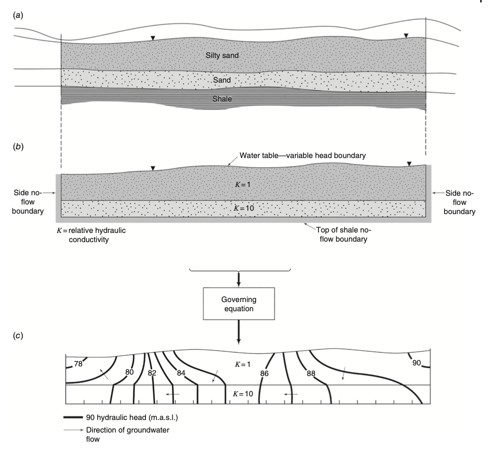
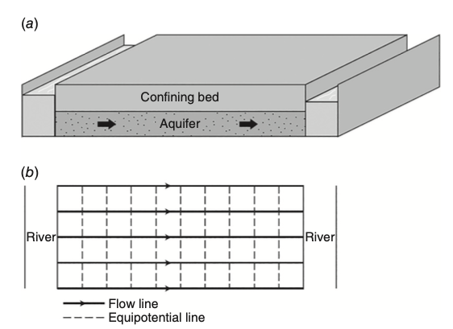
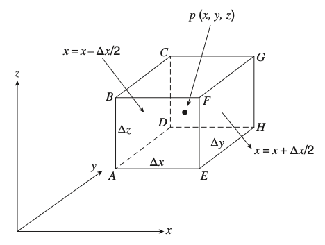
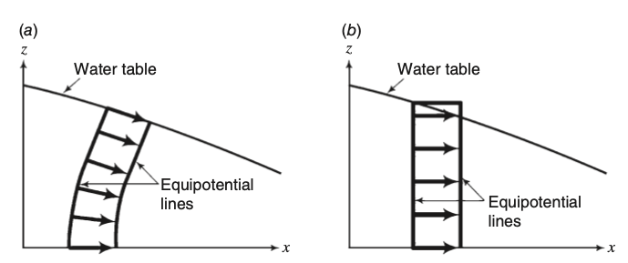
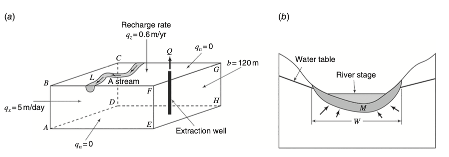

- / -
EMSC3025/6025: Remote Sensing of Water Resources
Dr. Sia Ghelichkhan
- / -
Groundwater -- Principles
EMSC3025/6025
Dr. Sia Ghelichkhan
Objectives
By the end of this lecture, you should be able to:
- Understand the theory of saturated groundwater flow.
- Derive and apply the basic groundwater flow equation.
- Use flow nets to estimate hydraulic head distribution and flow paths.
- Identify boundary and initial conditions for analytical solutions.
- Solve simple steady-state flow problems using analytical methods.
Differential Equations of Groundwater Flow
What sets hydrogeology apart is its emphasis on mathematical treatment of physical processes.
We aim to determine how hydraulic head varies in a domain, using:
- Governing equation – describes groundwater flow.
- Domain – geometry and layering.
- Boundary conditions – head or flux specified at boundaries.
Once solved, the distribution of hydraulic head allows:
- Drawing equipotentials
- Deducing flow paths
This is illustrated in Figure 5.1:
- shows the physical system
- reformulates it mathematically
- solves for head contours and flow directions

More About Dimensionality
The dimensionality of the flow domain is not necessarily the same as that of the flow equation.
- A 1D equation can describe flow in a 3D domain if flow occurs in one direction only.
- The actual direction of water movement determines dimensionality.
Example:
- Figure 5.2 shows a confined aquifer between two rivers.
- Though 3D in structure, flow is only in x-direction.
- Therefore, it is governed by a 1D flow equation.

Deriving Groundwater Flow Equations
Groundwater flow equations are derived from mass conservation applied to a representative elementary volume (REV).
General conservation statement:
We account for:
- Flow through all faces of the REV
- Density (
\rho_w ), porosity (n ) - Velocity components in x, y, z

Mathematical Representation of Conservation
This says that the net mass inflow equals the rate of mass accumulation in the REV.
Mass Flux Derivation in x-direction
For x-direction inflow:
For x-direction outflow:
Net inflow:
Same derivation applies in y and z:
Full Conservation Equation
Assuming
Substituting Specific Storage
Thus, the conservation equation becomes:
Darcy’s Law and Final Governing Equation
Recall:
This is the main equation for flow in saturated porous media.
Special Cases of the Flow Equation
Steady-state (\partial h / \partial t = 0 ):
If medium is isotropic and homogeneous:
With Transmissivity and Source Term
Using
Including source/sink term
Dupuit’s Assumption for Unconfined Aquifer
In Dupuit approximation (vertical gradient negligible):
This is Boussinesq’s equation, commonly used for unconfined aquifers.

Boundary Conditions
To solve a groundwater flow equation, we must define boundary conditions — they define how the simulation domain interacts with its surroundings.
The three main types:
- Dirichlet (first-type): set hydraulic head
- Neumann (second-type): set water flux
- Cauchy (third-type): relate head and flux
These are essential for:
- Specifying known conditions (e.g., river stage)
- Simulating internal features (e.g., wells)
- Representing no-flow or recharge zones

Examples of Dirichlet, Neumann, and Cauchy BCsBoundary Conditions
First-Type Boundary (Dirichlet)
Dirichlet boundaries specify hydraulic head directly.
Examples:
- Lake or river with known water level
- Constant head boundaries (e.g., 120 m)
Second-Type Boundary (Neumann)
Neumann boundaries specify flux across a surface (outflow or inflow).
Examples:
- Recharge zone
- Extraction or injection well
- No-flow boundary (special case:
q_n = 0 )
where
Boundary Conditions
Third-Type Boundary (Cauchy)
Cauchy boundaries relate flux to head difference between domain and external system.
- Often used at interfaces with surface water bodies (e.g., river–aquifer exchange)
where:
K_m = hydraulic conductivity of boundary materialM = boundary thicknessh_m = external head (e.g., river stage)
Summary of Boundary Conditions
- Dirichlet: known head — simple to implement, good for constant-head features
- Neumann: known flux — useful for recharge, no-flow, or well inflow/outflow
- Cauchy: flexible — allows head to vary and adjusts flux based on difference
The choice depends on physical setting, data availability, and model objectives.
Initial Conditions
For transient problems, we must specify an initial condition — the hydraulic head throughout the domain at time
This is not required for steady-state problems.
Flow-Net Analysis
Once the flow equation and boundaries are specified, we can sketch:
- Streamlines: direction of groundwater flow
- Equipotential lines: contours of equal hydraulic head
These intersect at right angles in isotropic, homogeneous systems.
The Laplace equation for 2D steady-state flow is:
Rules for Flow Nets
- Equipotential lines are perpendicular to streamlines
- Curvilinear squares form where lines intersect
- Same head drop across equipotentials; same flow between streamlines
- No-flow boundaries are parallel to flow lines
- Constant-head boundaries align with equipotentials
Flow Net Example
This dam seepage problem shows:
- Constant head on each side (pool levels)
- No flow along bottom boundary (impermeable base)
- Flow net with curved equipotentials & streamlines forming squares
 Seepage through a permeable layer beneath a dam
Seepage through a permeable layer beneath a dam
Estimating Flow with Darcy’s Law
For one flow channel between equipotentials:
Total flow using
Flow Nets in Heterogeneous Media
In heterogeneous media, lines don’t form squares. Still, continuity of flow applies:
If
 Flow path changes with transmissivity
Flow path changes with transmissivity
Flow Line Refraction at Interfaces
Flow changes direction when crossing a boundary between media with different conductivity.
This is the refraction law for flow lines.
 Flow lines bend at boundaries of differing
Flow lines bend at boundaries of differing
Flow Nets in Anisotropic Media
When
Change coordinates to:
Now the problem becomes Laplacian again — squares restored in transformed domain.
Flow Net Transformation Summary
- Identify principal directions of
K - Transform
x -axis by(K_y / K_x)^{1/2} - Sketch flow net with squares
- Reproject to original coordinates
 From rectangles to squares using coordinate transformation
From rectangles to squares using coordinate transformation